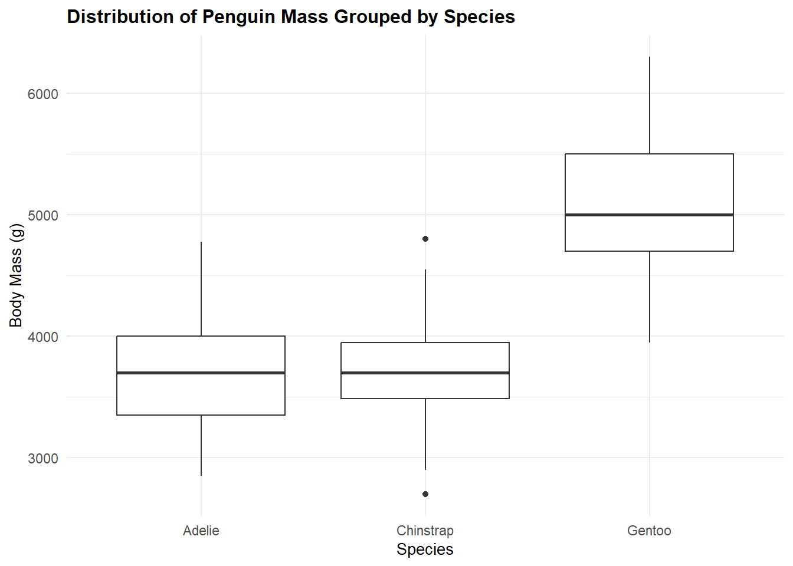
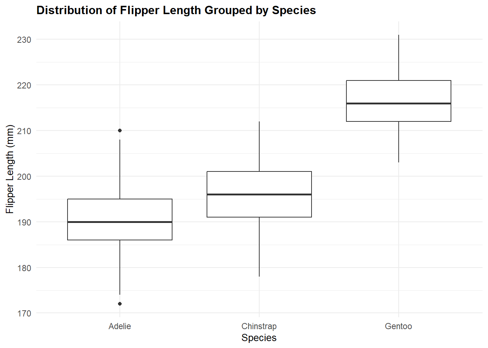

species island bill_length_mm bill_depth_mm
Adelie :152 Biscoe :168 Min. :32.10 Min. :13.10
Chinstrap: 68 Dream :124 1st Qu.:39.23 1st Qu.:15.60
Gentoo :124 Torgersen: 52 Median :44.45 Median :17.30
Mean :43.92 Mean :17.15
3rd Qu.:48.50 3rd Qu.:18.70
Max. :59.60 Max. :21.50
NA's :2 NA's :2
flipper_length_mm body_mass_g sex year
Min. :172.0 Min. :2700 female:165 Min. :2007
1st Qu.:190.0 1st Qu.:3550 male :168 1st Qu.:2007
Median :197.0 Median :4050 NA's : 11 Median :2008
Mean :200.9 Mean :4202 Mean :2008
3rd Qu.:213.0 3rd Qu.:4750 3rd Qu.:2009
Max. :231.0 Max. :6300 Max. :2009
NA's :2 NA's :2
Code
df %>%ggplot(aes(x = species, y = body_mass_g)) +geom_boxplot() +theme_minimal() +labs(title ="Distribution of Penguin Mass Grouped by Species", x ="Species", y ="Body Mass (g)") +theme(plot.title =element_text(size =12, face ="bold"), axis.title =element_text(size =10), legend.position ="right", legend.title =element_blank() )

Code
df %>%ggplot(aes(x = species, y = flipper_length_mm)) +geom_boxplot() +theme_minimal() +labs(title ="Distribution of Flipper Length Grouped by Species", x ="Species", y ="Flipper Length (mm)") +theme(plot.title =element_text(size =12, face ="bold"), axis.title =element_text(size =10), legend.position ="right", legend.title =element_blank() )

Code
df %>%ggplot(aes(x = species, y = bill_length_mm)) +geom_boxplot() +theme_minimal() +labs(title ="Distribution of Bill Length Grouped by Species", x ="Species", y ="Bill Length (mm)") +theme(plot.title =element_text(size =12, face ="bold"), axis.title =element_text(size =10), legend.position ="right", legend.title =element_blank() )